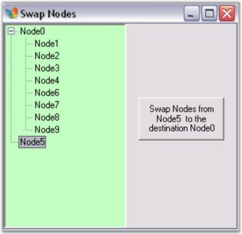

This can be done by using the following code.
|
[C#]
private void button1_Click(object sender, System.EventArgs e) { // Set the destination parent node. TreeNodeAdv Pnode = this.treeViewAdv1.Nodes[0]; TreeNodeAdv[] nodes =new TreeNodeAdv[this.treeViewAdv1.SelectedNodes.Count]; this.treeViewAdv1.SelectedNodes.CopyTo(nodes);
// Remove the selected nodes from their earlier parent nodes collection. foreach (TreeNodeAdv node in nodes) { node.Remove(); }
// Add the selected nodes to the destination parent nodes collection. foreach (TreeNodeAdv node in nodes) { Pnode.Nodes.Add(node); } } |
|
[VB.NET]
Private Sub button1_Click(ByVal sender As Object, ByVal e As System.EventArgs) ' Set the destination parent node. Dim Pnode As TreeNodeAdv = Me.treeViewAdv1.Nodes(0) Dim nodes As TreeNodeAdv() = New TreeNodeAdv(Me.treeViewAdv1.SelectedNodes.Count - 1) {} Me.treeViewAdv1.SelectedNodes.CopyTo(nodes)
' Remove the selected nodes from their earlier parent nodes collection. For Each node As TreeNodeAdv In nodes node.Remove() Next node
' Add the selected nodes to the destination parent nodes collection. For Each node As TreeNodeAdv In nodes Pnode.Nodes.Add(node) Next node End Sub |
Given below are screen shots depicting this process.

Figure 1173: Swapping Nodes from one Parent Node to another Parent Node - Illustrated